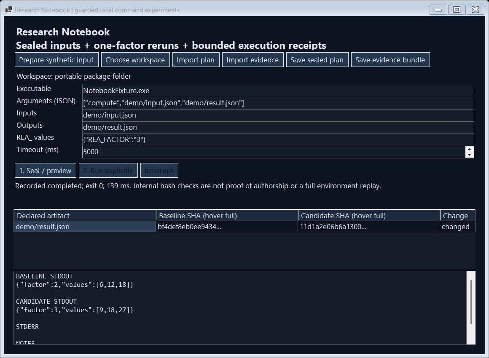

Research Notebook · A separate Windows command notebook and command-line tool
Keep a command, its inputs and its result together.
When a command produces a different result, terminal history may not tell you which input file or setting changed. This notebook records the program, chosen inputs, arguments and selected settings alongside the output, making repeat runs easier to inspect.
Try the native Windows appIndependent native app + CLI. The verified example launches our bundled fixture; installed Warp and cloud accounts were not used.
Experimental release · Standalone companion tool
What to expect from this release
- What you get
- A standalone Windows command notebook and command-line tool. Its saved run records and comparison controls live outside the Warp terminal.
- Verified so far
- Real local child-process runs, changed-input checks, native controls, browser examples and extracted executable behavior were tested using the supplied program.
- Still needs testing or implementation
- Compatibility with a broad range of developer tools and Windows environments has not been established. The restricted execution environment requires explicit adaptation for many ordinary tools.
- Relationship to the original app
- Installing it does not add notebook controls to Warp. Interactive terminals, SSH and Warp cloud features are outside this release; a workflow embedded in Warp would be a separate integration project.
Why you might use it
You ran a data-processing command last week and want to compare it with today's run. Copying the old command is only part of the story: the program, input file or settings may now be different. You need a record of the conditions you deliberately chose to track.
A concrete example. The included program processes the numbers 3, 6 and 9. One run uses a multiplier of 2; another uses 3. The notebook keeps both results and shows the changed setting. Timing and existing output-file state also differ, so this is a small illustration, not a controlled performance benchmark.
1. Review the plan
Choose the program, its arguments, input files and settings. Preview them before any command is launched.
2. Run deliberately
Press Run to launch the selected program with the chosen settings. Keep its output and a record of what happened.
3. Compare or repeat
Compare saved runs. Before repeating one, check that its selected program and input files still match; changed files can make it refuse the rerun.
What this page shows. This page displays saved results from real runs of the bundled example and checks their recorded output. It does not execute commands in your browser.
Where it runs and what is still untested. This is independent software, not a modified Warp terminal. It does not reproduce interactive terminal sessions, SSH connections or Warp's cloud features. Recording selected conditions cannot guarantee identical future results.
REAL NATIVE RUNS / SAME INPUT
One factor, two committed results.
The actual input is [3, 6, 9]. Both executions select the same executable bytes, declared input bytes, argument vector and output path. Only REA_FACTOR changes from 2 to 3. Timing and pre-existing output state also differ.
Loading native execution evidence…
Inspect the actual receipt JSON
This browser reads saved native receipts and uses WebCrypto to verify stdout byte commitments. It does not execute commands or independently authenticate the receipt's author. Full plan/receipt checks run in the original C# engine.
BEFORE → AFTER → USER EXPERIENCE
From remembering the conditions to inspecting them.
| Workflow before this prototype | Implemented behavior | Practical effect |
|---|---|---|
| Re-run a command under the current files and inherited environment. | Seal selected executable and declared input digests; restrict environment; refuse changed preconditions. | Catch observed drift before launching and avoid inheriting ambient credentials. |
| Paste two terminal outputs and compare by eye. | Keep a native before/after artifact grid and exact bounded output commitments. | Expose the factor-2 → factor-3 change with retained bytes and status. |
| Guess whether an interrupted command finished. | Distinguish completion, failure, interruption, timeout, output overflow and known capture uncertainty. | A partial or interrupted result does not silently become a successful experiment. |
| Share commands and copied output in a note. | Export create-new plan/receipt bundles; import and inspect without executing. | Verify consistency, then decide explicitly whether to run the selected executable locally. |
ACTUAL NATIVE INTERFACE
Two real Run clicks. One readable comparison.

Verified
- 35 real C# behavior and refusal checks, including owned native processes.
- 8 native-form checks including two actual Run button clicks.
- Self-contained desktop/CLI publication and extracted-release execution.
- Exact archive allowlists, CRC, hashes, runtime licenses and build-path marker scans.
Read verification evidence · Baseline plan · Candidate receipt
Scope that matters
The selected executable runs with your OS permissions. This launcher is not an OS sandbox. A program can access undeclared files, network services and child processes.
Only declared files and captured streams are observed. DLLs, OS state and all dependencies are not sealed. Parent exit is observable; descendant termination remains best effort. Hashes establish consistency, not authorship.
No PTY, interactive stdin, SSH, Warp Drive/Oz integration, remote host, cloud run or modified Warp executable is claimed.
Why this route?
Warp already supports runnable notebooks and workflows and command/output Blocks. This prototype explores a narrower inspectable execution contract. It does not claim those existing features are missing.
The public client was studied at immutable source pin d57d976. Its Windows bootstrap can install system toolchains and perform cloud authentication; it was not run under this project's workspace-only boundary. All shipped application code is original MIT C#.